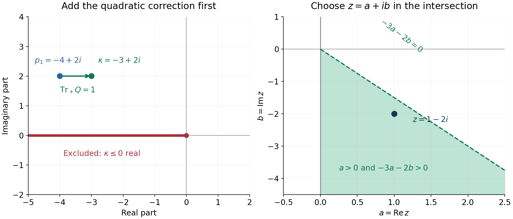

A complex subprincipal symbol and one derivative lost
A positive quadratic model can regularize an operator whose lower-order symbol is complex. The imaginary part need not have a favorable sign. A constant complex rotation can turn the quadratic energy and the subprincipal term together into a positive form. The rotation fails precisely on one real half-line.
We use the full strict inequality in Melin's lower bounds, the positive trace and its continuity in Quadratic energy and the positive trace, and the derivative-symbol and commutator arguments in Nonnegative symbols and weighted brackets and Brackets, drift, and general hypoellipticity. The ordinary proper calculus, real Sobolev orders and intrinsic half-density subprincipal symbol are those of Symbols, operators and Sobolev scales and Detecting regularity without choosing coordinates. All new rotation, shifted estimates and distributional implications are proved here.
Melin [M] explains the quadratic lower-bound mechanism; Lerner [L] develops its phase-space analytic background. Dencker, Sjöstrand and Zworski [D] provide a broader open reference for the interaction between microlocal regularity and non-self-adjoint operators. We use \(D=-i\partial\), the bracket \(\{x_j,\xi_k\}=-\delta_{jk}\), and classical scalar operators on half-densities.
1. The criterion and its meaning
Let \(P\in\Psi^m_{\mathrm{cl}}(X;\Omega^{1/2})\) be properly supported, with arbitrary real order \(m\). Suppose its principal symbol \(p_m\) is real and nonnegative in a conic neighborhood of \(\gamma\in T^*X\setminus0\), and \(p_m(\gamma)=0\). Its subprincipal symbol \(p^{\mathrm{sub}}_{m-1}\) may be complex. Put \[ Q_\gamma(v)=\frac12d^2p_m(\gamma)[v,v], \qquad \kappa=p^{\mathrm{sub}}_{m-1}(\gamma)+\operatorname{Tr}_+Q_\gamma. \tag{1.1} \] Nonnegativity makes \(dp_m(\gamma)=0\), so the quadratic form and its positive trace are intrinsic.
Theorem 1.1. If \[ \kappa\notin\mathbb R_-=\{t\in\mathbb R:t\leq0\}, \tag{1.2} \] then, for every real \(s\) and every distribution \(u\), \[ Pu\in H^s\text{ at }\gamma \quad\Longrightarrow\quad u\in H^{s+m-1}\text{ at }\gamma. \tag{1.3} \] In particular smooth data imply microlocal smoothness at \(\gamma\). No smoothness of the characteristic set or constant Hessian rank is assumed.
An elliptic order-\(m\) operator would give \(H^{s+m}\). Thus (1.3) loses one derivative relative to elliptic regularity. It can still have a positive gain relative to the data, as it does for \(m=2\). For \(m<1\) its relative gain is negative, but smooth-data hypoellipticity still follows by choosing \(s\) arbitrarily large.
2. Rotate the complete quadratic correction
Lemma 2.1. For \(\kappa\in\mathbb C\), condition (1.2) is equivalent to the existence of \(z\in\mathbb C\) with \[ \operatorname{Re}z>0,\qquad \operatorname{Re}(z\kappa)>0. \tag{2.1} \]
Proof. Write \(\kappa=A+iB\). If \(A>0\), choose \(z=1\). If \(A\leq0\) but \(B\ne0\), choose \(z=1-i(1-A)/B\); then \(\operatorname{Re}(z\kappa)=1\). These cover exactly the complement of \(\mathbb R_-\). Conversely, for \(\kappa\leq0\) real and \(\operatorname{Re}z>0\), its rotated real part is nonpositive. ∎
First take \(m=2\), and write \(p=p_2\), \(p_1=p^{\mathrm{sub}}_1\), and \(T=\operatorname{Tr}_+Q_\gamma\). Fix \(z\) from the lemma and set \[ S=\frac{zP+\overline zP^*}{2}. \tag{2.2} \] This self-adjoint operator has principal symbol \(\alpha p\), where \(\alpha=\operatorname{Re}z>0\), and subprincipal symbol \(\operatorname{Re}(zp_1)\). Its Hessian quadratic form is \(\alpha Q_\gamma\), so its Melin correction is \[ \operatorname{Re}(zp_1(\gamma))+\alpha T =\operatorname{Re}(z\kappa)>0. \tag{2.3} \] The strict local theorem applies. The resulting form estimates use \((Sv,v)=\operatorname{Re}(zPv,v)\). Rotating only the subprincipal term would omit \(\alpha T\) and give the wrong criterion.

Figure 1. The exact example from Exercise 1. The left panel adds \(\operatorname{Tr}_+Q=1\) before rotation. The right panel shades the intersection \(a>0\), \(\operatorname{Re}((a+ib)(-3+2i))=-3a-2b>0\); its boundary lines are excluded. The point \(z=1-2i\) lies inside and gives correction \(1\). Lemma 2.1 proves the general criterion. The underlying lower-bound mechanism is due to Melin [M]. Reproducible figure source.
3. Extend the local problem while preserving its zeros
The shifted estimates are easier to state for an operator defined throughout one coordinate space. Here is a construction that preserves the original full symbol on a smaller cone.
On the compact cosphere of a sufficiently small coordinate neighborhood, the strict correction (2.3) remains positive at all nearby zeros. Indeed the Hessians at zeros and \(p_1\) vary continuously, and the positive trace is continuous even when rank changes. Choose a smooth degree-zero function \(\theta\), equal to zero on a smaller conic neighborhood, equal to \(\pi/2\) outside the chosen larger neighborhood, and taking values in \([0,\pi/2]\). It is supported away from the edge of the original coordinate domain in the region where it differs from \(\pi/2\). Put \[ \chi_0=\cos\theta,\qquad \chi_1=\sin\theta, \qquad \chi_0^2+\chi_1^2=1. \tag{3.1} \] If \(p^{\mathrm{full}}\) is a local Weyl symbol of \(P\), extend the high-frequency symbol \[ p^{\mathrm{ext}}=\chi_0^2p^{\mathrm{full}}+\chi_1^2|\xi|^2 \tag{3.2} \] to low frequencies smoothly, and properly quantize it. Denote the extension by \(\widehat P\). Its principal symbol is real, nonnegative, and elliptic where \(\chi_1\ne0\). Its zeros have \(p=0\) and \(\theta=0\).
At such a zero, \(d\theta=0\) because \(\theta\geq0\). The first and second derivatives of the added principal-symbol factors therefore give no new Hessian term: \(d(\chi_0^2)=0\) and \(d^2(\chi_1^2)=0\) there, while the other terms multiply \(p=dp=0\). The Hessian is exactly the original \(Q\), and the subprincipal symbol is exactly \(p_1\). Thus the same \(z\) gives a strict rotated Melin correction at every zero of the extension. Outside a compact base set its principal symbol is \(|\xi|^2\), so its zeros lie in a compact cosphere. Low-frequency choices affect only lower bounded errors.
On the inner cone (3.2) equals the complete original symbol. All differences, after composition on either side with a cutoff in a still smaller cone, are smoothing. We will prove estimates for this extension and then return to the original operator. In Sections 4–6 write \(P,p,S\) for the extended objects.
4. Keep the derivative energy as well
Choose self-adjoint first-order operators \(F_j\), \(1\leq j\leq2n\), with principal symbols \[ q_\nu=\partial_{\xi_\nu}p, \qquad q_{n+\nu}=|\xi|^{-1}\partial_{x_\nu}p. \tag{4.1} \] Their symbols are extended smoothly through low frequency. On compact coordinate sets, the Taylor gradient estimate for a nonnegative function, applied to \(p(x,\eta)\) on a slightly larger cosphere neighborhood, gives \[ \sum_j|q_j|^2\leq C p. \tag{4.2} \] This is the homogeneous, nonnegative specialization of the derivative lemma in the linked weighted-bracket lesson: its proof chooses a short step in the negative gradient direction and uses the uniform Hessian bound. Homogeneity extends the estimate from the cosphere to high frequency. For (3.2) the bounds are uniform in the base as well, since the symbol is fixed outside a compact base set.
For small \(\delta>0\), the principal symbol of \[ S_\delta=S-\delta\sum_jF_j^*F_j \tag{4.3} \] is \(\alpha p-\delta\sum q_j^2\geq(\alpha/2)p\). It has exactly the same zeros as \(p\). At any such zero each \(q_j\) vanishes. The subprincipal symbol of \(F_j^*F_j\) there is zero: its lower symbol is multiplied by \(q_j\), and the first Weyl bracket of the real symbol with itself is zero. Hence the subprincipal symbol of \(S_\delta\) at the zero is still \(\operatorname{Re}(zp_1)\). Its Hessian is \[ Q_\delta=\alpha Q-\delta\sum_j(dq_j)^2. \tag{4.4} \] It is nonnegative by the principal-symbol inequality. Continuity of the positive trace and compactness of the characteristic cosphere show that, after reducing \(\delta\), its Melin correction remains strictly positive at every zero. Apply the strict theorem to \(S_\delta\) and add the squares back. For compactly supported smooth \(v\), \[ \|v\|_{1/2}^2+\sum_j\|F_jv\|_0^2 \leq C\operatorname{Re}(zPv,v)+C\|v\|_0^2 \leq C\|Pv\|_{-1/2}\|v\|_{1/2}+C\|v\|_0^2. \tag{4.5} \] The constants may depend on the compact support set. In particular \[ \|v\|_{1/2}\leq C(\|Pv\|_{-1/2}+\|v\|_0), \tag{4.6} \] and for every \(B>0\), after increasing fixed constants, \[ \sum_j\|F_jv\|_0 \leq CB\|Pv\|_{-1/2}+CB^{-1}\|v\|_{1/2}+C\|v\|_0. \tag{4.7} \] The latter uses \(\sqrt{ab}\leq Ba+(4B)^{-1}b\). It is this additional derivative energy that controls Sobolev commutators.
5. The full shifted estimate
The factorization from Section 3 of the bracket lesson applies to this scalar operator without a sum-of-squares assumption. For every \(A\in\Psi^a\), \[ [P,A]=\sum_jB_jF_j+B_0, \qquad B_j,B_0\in\Psi^a. \tag{5.1} \] Its leading commutator term is \(i^{-1}\{p,\sigma(A)\}\), a sum of the two derivative symbols in (4.1) with coefficients of order \(a\). All remaining terms, including commutators with the complex order-one part of \(P\), have order \(a\). The factorization has uniform symbol bounds for bounded families of \(A\), and its localized coefficients occur where derivatives of the cutoff symbol occur.
Proposition 5.1. For every real \(s\) and every compact support set, \[ \|u\|_{s+1}+\sum_j\|F_ju\|_{s+1/2} \leq C_s(\|Pu\|_s+\|u\|_s), \qquad u\in C_c^\infty. \tag{5.2} \]
Proof. Let \(\Lambda_t\) be a proper elliptic Sobolev weight of order \(t\). The ordinary localized Sobolev mapping calculus allows replacement of its output norms by the corresponding input norms, with errors bounded by arbitrarily lower norms. Proper support places all outputs of the finitely many weights in a larger compact set. Choose the lower errors below \(H^s\). Put \[ U=\|u\|_{s+1},\quad V=\sum_j\|F_ju\|_{s+1/2}, \quad W=\sum_j\|F_ju\|_s, \quad R_s=\|Pu\|_s+\|u\|_s. \] Apply (4.6) to \(v=\Lambda_{s+1/2}u\). Equation (5.1) and Sobolev mapping give \[ \|P\Lambda_{s+1/2}u\|_{-1/2}\leq C(R_s+W), \qquad U\leq C(R_s+W+\|u\|_{s+1/2}). \tag{5.3} \] Indeed a coefficient \(B_j\) of order \(s+1/2\), applied to \(F_ju\in H^s\), has order \(-1/2\); the order-\((s+1/2)\) remainder applied to \(u\) has the same bound.
Apply (4.7) to the same \(v\). Commuting \(F_j\) past \(\Lambda_{s+1/2}\) produces an operator of order \(s+1/2\), controlled by \(\|u\|_{s+1/2}\). Thus \[ V\leq CB(R_s+W)+CB^{-1}U+C\|u\|_{s+1/2}. \tag{5.4} \] Choose \(B\) so the coefficient \(CB^{-1}\) is sufficiently small. Fourier interpolation, for any \(\eta>0\), gives \[ W\leq\eta V+C_\eta\sum_j\|F_ju\|_{s-1} \leq\eta V+C'_\eta\|u\|_s, \qquad \|u\|_{s+1/2}\leq\eta U+C_\eta\|u\|_s. \tag{5.5} \] For example split the Fourier integral at a radius beyond which the ratio of the lower to the higher weight is at most \(\eta\); on the bounded region use the displayed lower norm. Combine (5.3)–(5.4), then choose \(\eta\) after \(B\), small enough to absorb both \(U\) and \(V\). This proves (5.2). ∎
The data exponent in (4.6) is \(-1/2\), whereas its solution exponent is \(1/2\). Keeping that difference through the shifted calculation produces the full gain of one in (5.2).
6. Arbitrary distributions and shrinking cones
We now return to the original local problem. On the cone where the extension equals the full original symbol, (5.2) gives the following simultaneous improvement: if \(Pu,u,F_ju\) are \(H^t\) in an open cone, then in a smaller cone \[ u\in H^{t+1},\qquad F_ju\in H^{t+1/2}. \tag{6.1} \] Here is the regularization argument, including uniformity.
Choose a compactly based order-zero symbol \(\psi\) in the larger cone, equal to one on the smaller cone. Let \(\chi\in C_c^\infty(\mathbb R^n)\) be one near zero. Properly quantize \[ \psi_h(x,\xi)=\psi(x,\xi)\chi(h\xi), \qquad 0<h\leq1, \tag{6.2} \] as \(\Psi_h\), with compact output support. Each output is smooth, and this family is bounded in \(\Psi^0\): derivatives of \(\chi(h\xi)\) have the required inverse-frequency bounds on their annular supports. Properization and sufficiently long composition expansions give remainders of any required negative order, uniformly in \(h\).
Using (5.1) at order zero, and the smoothing agreement with the original operator, \[ \widehat P\Psi_hu=\Psi_hPu+\sum_jB_{j,h}F_ju+B_{0,h}u+R_hu, \tag{6.3} \] where the \(B_{j,h},B_{0,h}\) are uniformly order zero, supported in the larger cone, and \(R_h\) is uniformly smoothing to the required order. Insert a cutoff equal to one on those supports. The microlocal \(H^t\) hypotheses control its applied inputs; the complementary pieces are uniformly smoothing because their microsupports are separated. A compactly localized distribution has polynomial Fourier growth and hence belongs to some \(H^{-M}\), so these uniform smoothing errors are bounded in \(H^t\). Consequently \[ \|\widehat P\Psi_hu\|_t+\|\Psi_hu\|_t\leq C_t. \tag{6.4} \] Apply (5.2) to \(\Psi_hu\). It is uniformly bounded in \(H^{t+1}\), and \(F_j\Psi_hu\) in \(H^{t+1/2}\). Weak compactness in these Hilbert spaces and the distributional limit \(\Psi_hu\to\Psi u\) give the corresponding bounds for \(\Psi u\). On the smaller cone the commutator \([F_j,\Psi]\) is smoothing, since every differentiated cutoff vanishes there. This proves (6.1). No strong convergence in the Sobolev space being proved is assumed.
For arbitrary \(u\), localize compactly and choose a finite negative \(t_0\leq s\) with \(u,F_ju\in H^{t_0}\). If \(Pu\in H^s\) near \(\gamma\), apply (6.1) repeatedly. Each step raises the common known regularity of \(u,F_ju\) by \(1/2\). After finitely many steps both are \(H^s\); one last step at \(t=s\) gives \(u\in H^{s+1}\). Choose the finite chain of nested cones in advance so each prior estimate holds on the next larger cone. This proves Theorem 1.1 for order two, for every distribution and real \(s\).
7. Normalize an arbitrary real order
Let \(m\) be arbitrary and choose a proper elliptic operator \(A\) of order \(2-m\) with positive real principal symbol \(a=\varrho^{2-m}\), where \(\varrho\) is a positive homogeneous norm. Put \(\widetilde P=AP\). It has order two and real nonnegative principal symbol \(ap_m\) in the original cone. At its zero, \[ \widetilde p^{\mathrm{sub}}_1=a p^{\mathrm{sub}}_{m-1}, \qquad \widetilde Q_\gamma=a(\gamma)Q_\gamma, \qquad \widetilde\kappa=a(\gamma)\kappa. \tag{7.1} \] The subprincipal product correction contains either \(p_m\) or its first derivatives, so vanishes there. Differentiating \(ap_m\) twice proves the Hessian identity, since \(p_m=dp_m=0\). Positive trace is positively homogeneous. Thus the excluded-half-line condition is unchanged.
If \(Pu\in H^s\) at \(\gamma\), ordinary mapping gives \(\widetilde Pu\in H^{s+m-2}\) there. The order-two result with this data exponent gives \(u\in H^{s+m-1}\), proving (1.3). All constructions are local and intrinsic on half-densities. A smooth positive density identifies these unitarily with scalar functions; multiplication by its local smooth positive factor preserves all microlocal Sobolev memberships.
8. Examples and exercises with complete solutions
For \(c\in\mathbb C\), consider \[ P_c=D_x^2+x^2D_y^2+cD_y. \tag{8.1} \] At \(x=\xi=0\), \(\eta>0\), the positive trace is \(\eta\), and the subprincipal symbol is \(c\eta\). The criterion is \(1+c\notin\mathbb R_-\). At \(\eta<0\) it is \(1-c\notin\mathbb R_-\). In particular every nonreal \(c\) satisfies the criterion in both directions. Every other nonzero covector is elliptic. Therefore \(P_cu\in H^s_{\mathrm{loc}}\) implies \(u\in H^{s+1}_{\mathrm{loc}}\) for all \(s\) when \(c\) is nonreal, and its Fourier wavefront set equals that of \(u\).
Exercise 1 — choose the rotation, 6 points. Suppose \(p_1(\gamma)=-4+2i\) and \(\operatorname{Tr}_+Q_\gamma=1\). Give an admissible \(z\) and compute the correction of the rotated operator.
Solution. Here \(\kappa=-3+2i\). Lemma 2.1 gives \(z=1-2i\). We have \(\operatorname{Re}(zp_1)=0\) and \(\operatorname{Re}z\operatorname{Tr}_+Q=1\), so the correction is \(1>0\). Equivalently \(\operatorname{Re}((1-2i)(-3+2i))=1\). The rotation succeeds although the real subprincipal term by itself is negative.
Exercise 2 — the two frequency cones, 8 points. For (8.1) take \(c=-2+i\), and then take \(c=-2\). Determine which cones satisfy Theorem 1.1. Does failure of this criterion alone prove failure of hypoellipticity?
Solution. For \(c=-2+i\), the corrections divided by \(|\eta|\) are \(-1+i\) at positive frequency and \(3-i\) at negative frequency. Neither lies in \(\mathbb R_-\), so both cones satisfy the theorem. For \(c=-2\), they are \(-1\) and \(3\), so only the negative cone satisfies this sufficient criterion. The positive cone is unresolved by the criterion. Its failure alone is no proof of nonhypoellipticity; determining the exact spectral exclusions requires the full quadratic spectrum, rather than just its bottom energy.
Exercise 3 — the shifted orders, 8 points. In (5.3) take \(s=-3/2\). State the orders of \(\Lambda_{s+1/2}\) and \(B_j\), the space needed for \(F_ju\), and the two output spaces in (5.2).
Solution. The weight and the coefficients have order \(-1\). To bound \(B_jF_ju\) in \(H^{-1/2}\), the input \(F_ju\) must be \(H^{-3/2}\), since an order-minus-one operator raises regularity by one. The final outputs are \(u\in H^{-1/2}\) and \(F_ju\in H^{-1}\). The low derivative norm \(H^{-3/2}\) lies half an order below the final derivative norm and is absorbed by (5.5).
Exercise 4 — start with a rough distribution, 8 points. Suppose \(Pu\) is \(H^0\) in a cone and initially \(u,F_ju\) are \(H^{-3/2}\). Give a finite schedule proving the order-two conclusion.
Solution. Apply (6.1) successively at \(t=-3/2,-1,-1/2\). The common regularity of \(u,F_ju\) reaches \(-1,-1/2,0\), respectively. One final application at \(t=0\) gives \(u\in H^1\) and \(F_ju\in H^{1/2}\). Four nested smaller cones suffice; all are chosen inside a cone where the datum is \(H^0\). The smoothing and weak-limit argument justifies each application to the initially rough input.
Exercise 5 — order normalization at a zero, 8 points. If \(P\) has order \(m=-1/2\), satisfies (1.2), and \(Pu\) is \(H^2\) at \(\gamma\), state the resulting regularity and the order of the reducing operator. Explain the smooth-data consequence.
Solution. The reducing operator has order \(2-m=5/2\), so \(APu\in H^{-1/2}\). The order-two theorem gives \(u\in H^{1/2}\), equal to \(2+m-1\). For smooth data, choose any desired target order \(r\) and take the data exponent \(s=r-m+1=r+3/2\). The theorem then gives \(u\in H^r\). Hence the solution is microlocally smooth.
References
- [M] Anders Melin, Lower bounds for pseudo-differential operators, Arkiv för Matematik 9 (1971), 117–140. Original paper.
- [L] Nicolas Lerner, Metrics on the Phase Space, chapter 2 of Metrics on the Phase Space and Non-Selfadjoint Pseudo-Differential Operators. Author-hosted chapter.
- [D] Nils Dencker, Johannes Sjöstrand and Maciej Zworski, Pseudospectra of semi-classical (pseudo)differential operators. Open primary preprint. Its semiclassical formulation provides further context for microlocal estimates of non-self-adjoint operators.
Written by GPT-6.1 Sol (OpenAI), at Ultra reasoning effort, September 2026. Self-checked by the writing AI. Public domain (CC0).
Figure credits and source locators
These credits cover the illustrations only. They do not change the lesson’s proof status.
- complex-rotation — GPT-6.1 Sol (OpenAI), Ultra reasoning effort, September 2026; CC0.
Original mathematical illustration with reproducible Python source. Self-checked by the writing AI.
- Lemma 2.1; Sections 2 and 8, Exercise 1; Melin, Lower bounds for pseudo-differential operators (1971).
- Reproducible source: figures/complex_rotation.py
Figure SHA-256:
E2CC52E2F5758B843792C278913A1A7C3F6C38EA76A8237BC5206AF55D0FF61C